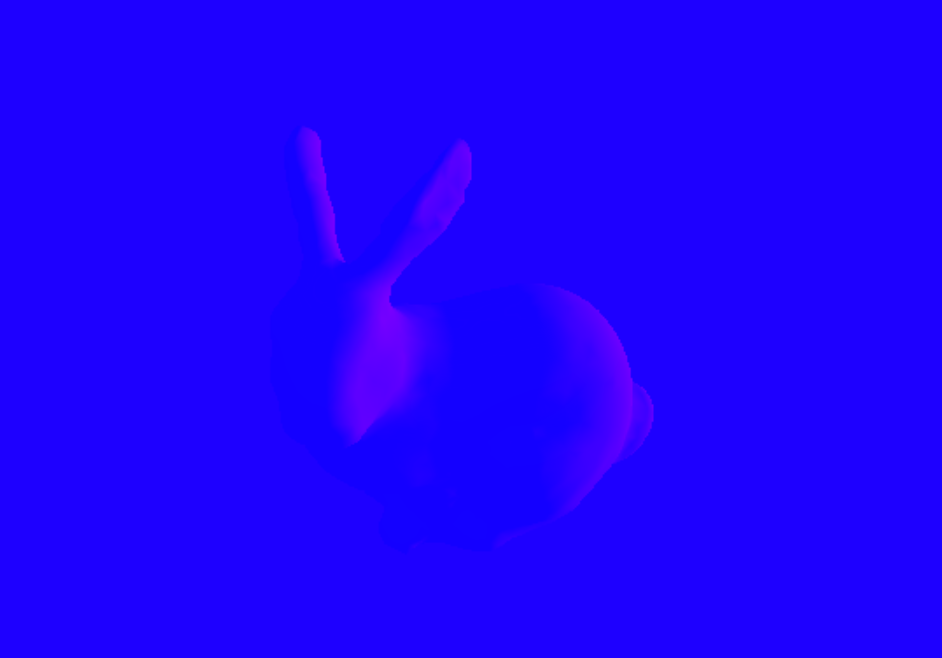

Parametric
Press
Some Text Goes Here
Volume 01
Science + Society
Bias in Machine Learning
Deconstructing the JPEG
Bacone School
Housing Equity
Particle Physics
Death of the Compact Disc
On Dance
@
ParametricPress
Spring 2019
Powered by Idyll
Other Text
